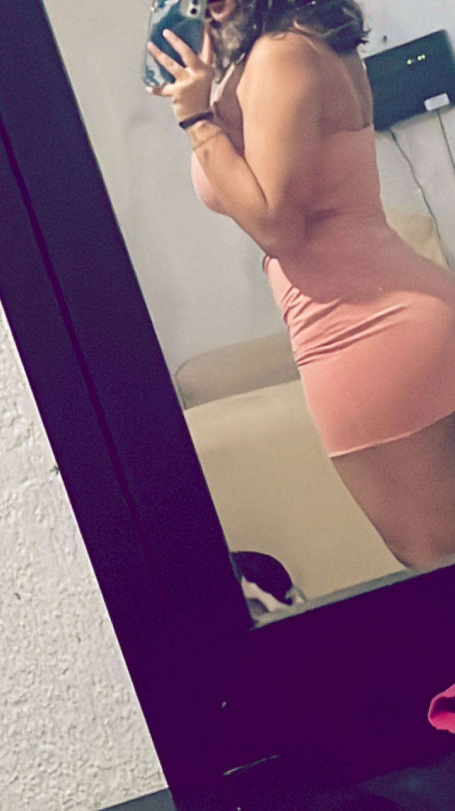

Semana 2 - El dulce sonido de un nosotros
La historia de los patos, los primeros stickers, las risas constantes, y las frases dulces. Esta semana fue cuando todo se empezó a volver serio, pero divertido. Nos hablamos con más cariño, hubo fotos compartidas, bromas internas y ya se notaba que el corazón empezaba a latir diferente. Aquí ya no eramos dos personas platicando... eramos dos personas creando un espacio propio. El humor se mezcló con el cariño, y los buenos días se convirtieron en rutina deseada. Había complicidad en cada mensaje, ternura en cada respuesta, y risas que sanaban hasta los días difíciles. Creamos una playslit amor, lo recuerdas? Porque no seguimos? Esta semana te traje a casa y mi mamá casi se nos desmaya jajaajaj comimos sushito y despues en tu casa nos juramos amor eterno, viendonos a los ojos. El dia 14 de febrero, bueno fue el 13, porque el 14 no nos vimos, perdon por eso. El 13 fuimos al gdluz jsjsjs te acuerdas amor, bonito dia, contigo obvio, cualquiera es bonito de esa manera hahaja
Momentos que derriten:
“Tú eres mis primeros mensajes destacados.”
“Si tú fueras un cuento, yo lo leería mil veces…”
“Ya no quiero que pase un solo día sin saber de ti.”
✨ Planes mágicos que surgieron:
Planearon su primera salida, hablaron de qué película verían en persona, compartieron fotos y stickers con una dulzura que ya gritaba amor.
Momentos

